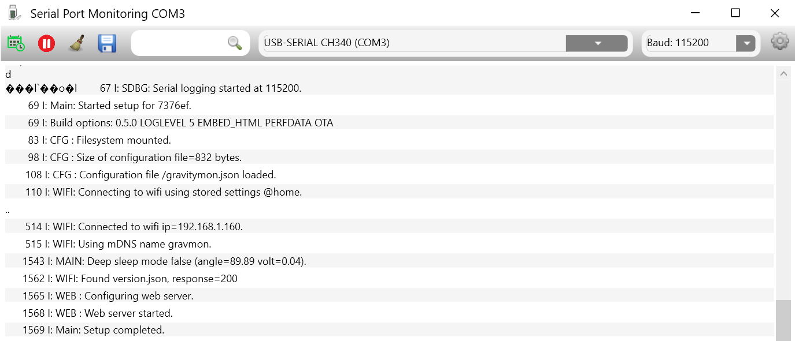
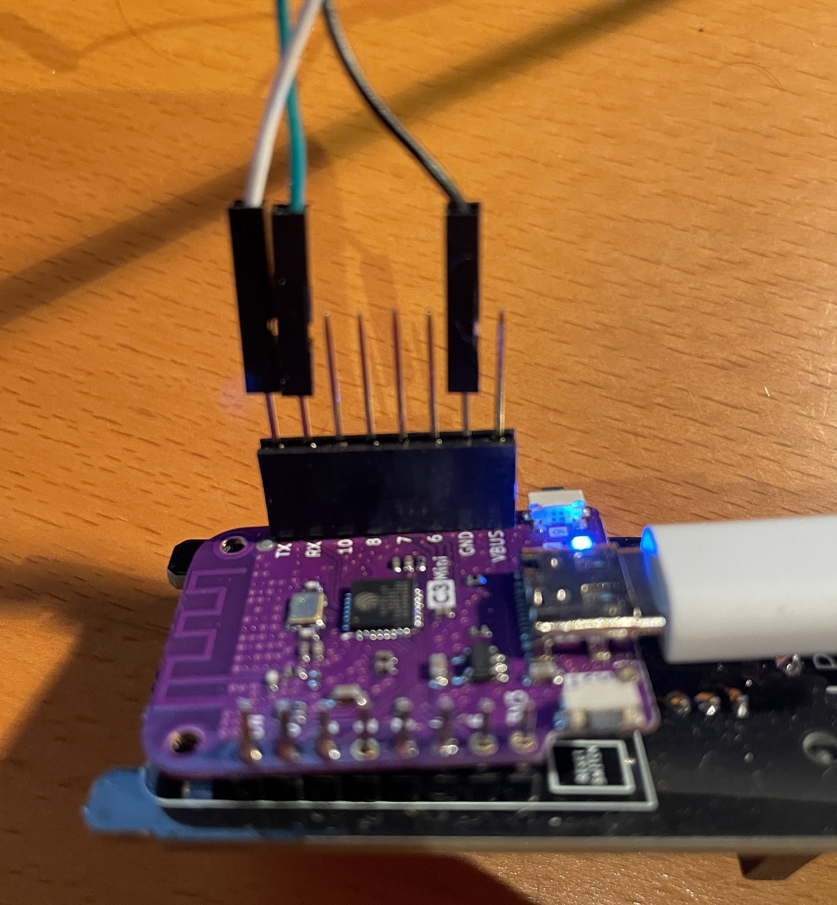
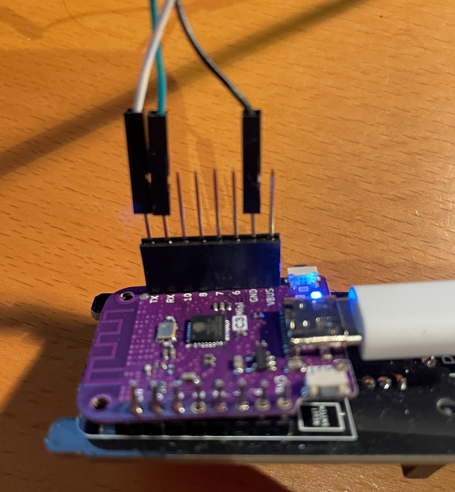

Compiling the software¶
Tools¶
I use the following tools in order to build and manage the software:
Visual Studio Code
PlatformIO
Git for Windows
VSCode plugin: Minify (used to minimise the html files)
Code Formatting¶
I use pre-commit and their cpp style checks to validate the code. Plugin defintions are found in .pre-commit-config.yaml
Note
There is not yet any automatic checks since this does not work on Windows. It works if running under WSL2 with Ubuntu.
Targets¶
In the platformio config there are 3 targets defined
gravity-debug; Maximum logging for trouble shooting, deep sleep is disabled.
gravity-release; Standard release
gravity32-release: Version for ESP32 mini.
gravity32c3-release: Version for ESP32 C3 mini v2.1+.
gravity32c3v1-release: Version for ESP32 C3 mini v1.0.
gravity32s2-release: Version for ESP32 S2 mini.
gravity32lite-release: Version for ESP32 lite (Floaty hardware).
Warning
The debug target can be unstable and crash the device under certain circumstanses. Excessive logging to the serial port can cause corruption and crashes. So only enable enough debugging to troubleshoot your changes.
Serial debugging on battery¶
{kind=link}
On the ESP32 builds the serial output can be written to UART0 which is connected to the RX/TX pins on the chip. This way the serial output can be viewed without a connection to the USB port, convinient when running the device on battery power. In order to get this to work you need to compile the sofware with the option DUSE_SERIAL_PINS and attach as USB to TTL cable to the correct pins.
You connect the USB to TTL cable that you connect the TX, RX and GND pins. Dont connect the power pin if you are powering the device from USB or Battery.
 

{kind=link}
Source structure¶
path |
content |
|---|---|
/bin |
Contains compiled binaries |
/data |
Directory for flashing device filesystem |
/doc |
Various external documents used as input |
/html |
Source for html files |
/img |
Images uses in README.md |
/lib |
External libraries used when compiling |
/script |
Scripts used in build process |
/src |
Source code for software |
/src_docs |
Source code for documentation |
/test |
Test data for developing html files |
Options¶
This is a list of C++ defines that is used to enable/disable functions in the code.
define |
description |
|---|---|
ACTIVATE_OTA |
Enables the OTA functionallity in the code |
SKIP_SLEEPMODE |
The device never goes into sleep mode, useful when developing. |
xxx_DISABLE_LOGGING |
Done include verbose logging in the corresponding class. Excessive logging may crash device. |
USE_LITTLEFS |
Use the new filesystem in Ardurino |
USER_SSID |
If defined the device will always use this SSID |
USER_SSID_PWD |
Password to the SSID |
CFG_APPVER |
Defines the version of the compiled software |
USE_SERIAL_PINS |
Will send the serial console to the TX/RX pins on an ESP32 target so that debugging can be done when on battery |
FLOATY |
Build for the ESP32lite FLOATY hardware option (no DS18B20 and no battery monitor) |